Dans ce laboratoire, l’objectif est de poursuivre l’analyse d’une base de données en vérifiant s’il existe des liens entre deux variables à échelle nominale ou ordinale. Est-ce que des différences observées au niveau d’un échantillon sont assez significatives pour être généralisées à la population? Ceci se fait à l’aide d’un test d’indépendance du khi-deux. Les étapes d’un tel test sont présentées dans ce laboratoire.
On souhaite étudier la base nationale des collisions automobiles de \(2019\text{.}\) Plus spécifiquement, on s’intéresse aux liens possibles entre les variables présentées à la Section A.2. Comme dans le laboratoire 6 sur les tests d’hypothèse paramétriques, un canevas sera utilisé pour les tests d’indépendance du khi-deux.
Deux tests d’indépendance sont présentés. Un premier vérifiant le lien ou non entre la gravité d’une collision et l’âge d’une personne conductrice dans la collision; et un second vérifiant s’il existe un lien entre la gravité d’une collision et le type de mesures de sécurité dans la collision. La gravité d’une collision est une variable qualitative nominale avec quatre modalités : une collision provoquant au moins une perte de vie (code \(1\) dans le fichier Excel), une collision provoquant une blessure non mortelle mais pas de perte de vie (code \(2\)), gravité inconnue (code U) et la juridiction ne fournit pas cet élément d’information (code X). Le type de dispositifs de sécurité est uen variable qualitative nominale avec plusieurs modalités dont aucun dispositif de sécurité (codes 1, 12 ou 13 selon le type de véhicule), des ceintures (code 2), des sièges de bébé (codes 5 ou 6), des ports de casque (code 9), etc.
Puisque la base de données représente l’ensemble de toutes les collisions de l’année 2019, on sélectionne un échantillon aléatoire, soit les données du mois de décembre.
Sous-section7.2.1Lien entre la gravité d’un accident et le type de véhicule
Les étapes pour réaliser un test d’indépendance du khi-deux entre une variable qualitative et une variable quantitative sont présentées. On souhaite vérifier s’il existe un lien entre la gravité d’un accident et l’âge d’un conducteur. On choisit un seuil de signification de \(5\%\text{.}\)
Sous-section7.2.2Lien entre la gravité d’un accident et l’âge d’un conducteur
Les étapes pour réaliser un test d’indépendance du khi-deux entre une variable qualitative et une variable quantitative sont présentées. On souhaite vérifier s’il existe un lien entre la gravité d’un accident et l’âge d’une personne conductrice. On choisit un seuil de signification de \(5\%\text{.}\)
Copier le cavenas Test d’indépendance.
Pour effectuer un test d’indépendance, il faut copier le canevas dans le fichier de travail.
Ouvrir les fichiers Excel Données_Collisions.xlsx et Labo 7_Canevas.xlsx.
Effectuer la procédure présentée à la ... (voir labo 4 JS) pour copier la feuille Test d’indépendance du fichier Labo 7_Canevas au classeur Données_Collisions.
Sous-sous-section7.2.2.1Étapes d’un test d’indépendance avec au moins une variable quantitative
Lorsque l’on fait un test d’indépendance avec une variable quantitative continue, l’étape de la construction du tableau des effectifs observés peut être laborieuse. Il faut grouper les valeurs dans des classes dans le tableau croisé dynamique généré. De plus, il faut s’assurer que les effectifs théoriques sont assez grands.
Dans le classeur Données_Collisions, sélectionner la feuille Test d’indépendance. Renommer la feuille « Test Khi-Deux Age»
La première étape d’un test d’indépendance consiste à définir ses variables et écrire les hypothèses nulle et alternative. Dans la cellule C4, taper « La gravité d’une collision ». Dans La cellule C5, taper « L’âge d’une personne conductrice » (voir la Figure 7.2.1).
Pour ce test d’indépendance, l’hypothèse nulle \(H_{0}\) est que les deux variables sont indépendantes. L’hypothèse alternative \(H_{1}\) est son contraire, soit que les deux variables sont dépendantes.
Dans l’encadré gris de la cellule D8, vis-à-vis \(H_{0}\text{,}\) taper « La gravité d’une collision et l’âge d’une personne conductrice sont indépendants» (voir la Figure 7.2.1). Dans l’encadré gris de la cellule D11, vis-à-vis \(H_{1}\text{,}\) taper « La gravité d’une collision et l’âge d’une personne conductrice sont dépendants» (voir la Figure 7.2.1)
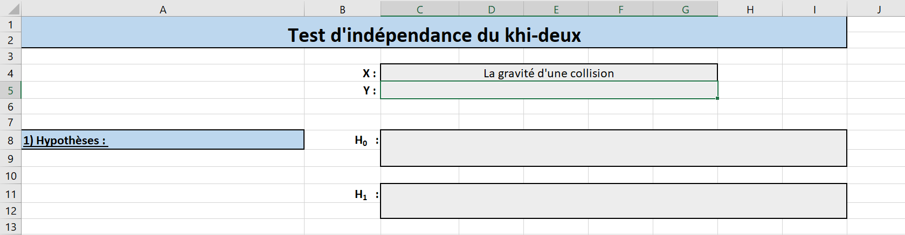
Figure7.2.1.Remplissage de la première étape d’un test d’indépendance entre la gravité d’une collision et l’âge d’une personne conductrice
La deuxième étape consiste à construire le tableau des effectifs observés et le tableau des effectifs théoriques.
Il faut commencer par générer un tableau croisé dynamique des effectifs observés. Dans la feuille Données_Collisions, sélectionner le tableau « Échantillon ».
En suivant les étapes présentées à la Sous-sous-section 1.2.8.1, générer, dans une nouvelle feuille de calcul qu’on renomme TCD_GraviteAge, un tableau croisé dynamique vide à partir du tableau Échantillon. Placer ce tableau dans la cellule A3 (voir la Figure 7.2.2).
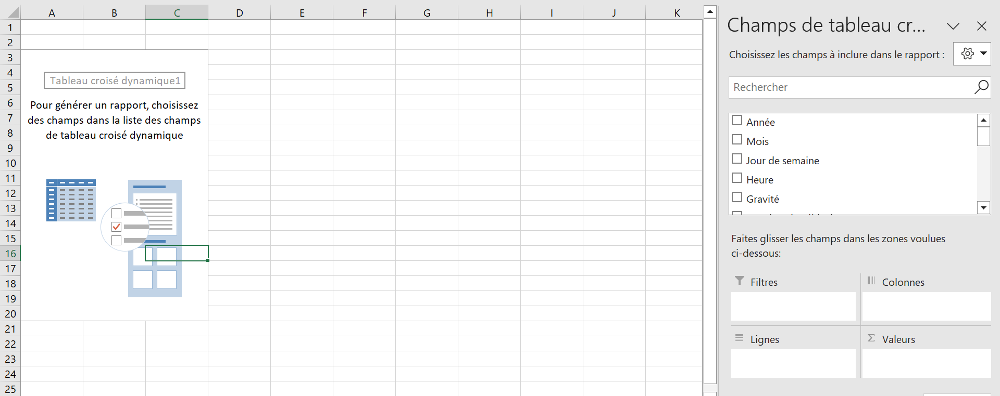
Figure7.2.2.Générer un tableau croisé dynamique vide
Glisser et déposer la variable Âge dans la zone de saisie Lignes (voir la Figure 7.2.3).
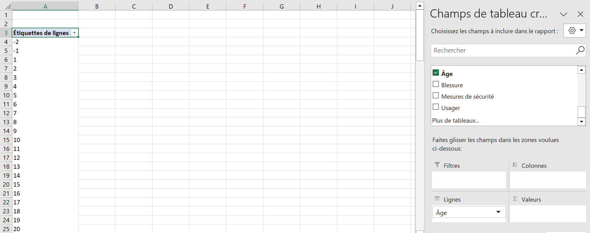
Figure7.2.3.Tableau croisé dynamique avec la variable Âge en lignes et la variable Gravité en colonnes
Glisser et déposer la variable Gravité dans la zone de saisie Colonnes (voir la Figure 7.2.3).
On veut maintenant grouper les valeurs de la variable Âge de \(0\) à \(100\) ans avec une amplitude de \(10\) ans. Il est important de se fier à la table de Sturges lorsque l’on fixe une amplitude. Cependant, on ne veut pas non plus avoir trop de classes avec peu d’effectifs observés pouvant mener au non-respect de la condition d’application du test d’indépendance de khi-deux.
Dans la colonne des étiquettes de lignes de la variable Âge, cliquer avec le bouton de droite de la souris une des valeurs de l’âge. Cliquer l’option Grouper (voir la Figure 7.2.4). Une boîte de dialogue s’affiche
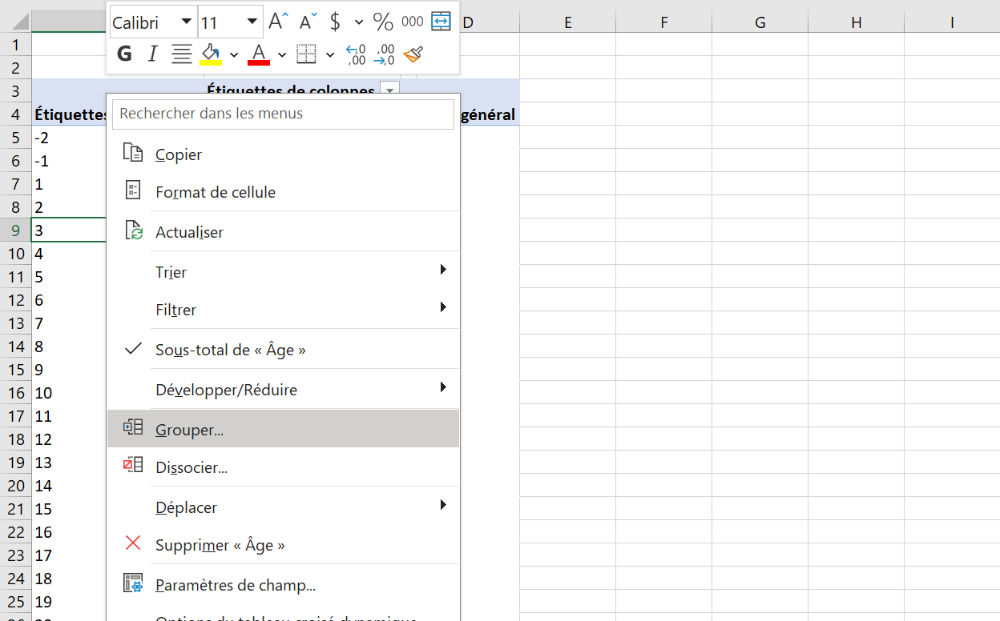
Figure7.2.4.Grouper en classes la variable Âge
Taper \(0\) comme valeur de début et \(10\) comme amplitude (voir la Figure 7.2.4). On choisit \(0\) comme valeur initiale, car on ne veut pas tenir compte des valeurs inférieures à \(0\text{,}\) soit les modalités \(-2\) et \(-1\) qui indiquent des informations inconnues par rapport à l’âge des personnes. Une fois le groupement fait, on peut filtrer les valeurs inférieures à \(0\text{.}\)
Pour filtrer les valeurs inférieures à \(0\text{,}\) cliquer sur le petit triangle du menu déroulant de l’étiquette de lignes (voir la Figure 7.2.4).
Sélectionner l’option Filtres s’appliquant aux étiquettes suivi de l’option Supérieur ou égal à (voir la Figure 7.2.4).
Une boîte de dialogue s’affiche. Dans la zone de saisie à droite l’option est supérieur ou égal à, taper \(0\) (voir la Figure 7.2.4). Cliquer sur 0K.
À ce stade, le tableau croisé dynamique devrait ressembler à la Figure 7.2.5
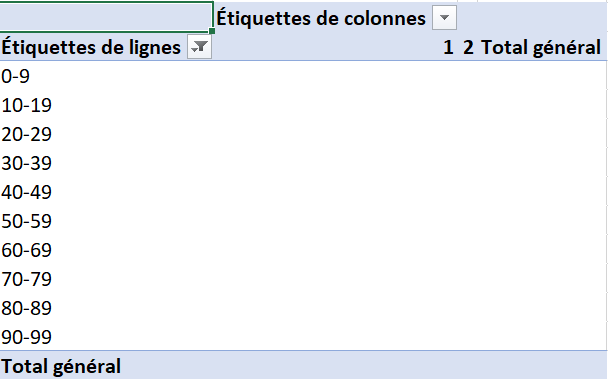
Figure7.2.5.Tableau croisé dynamique avec les variables Âge et Gravité
Glisser et déposer la variable Âge dans la zone de saisie Valeurs (voir la Figure 7.2.6). S’assurer que le calcul fait est bien le compte (Nombre) et non la somme. Si c’est la somme, changer pour Nombre avec les étapes vues à la Sous-sous-section 1.2.8.2.
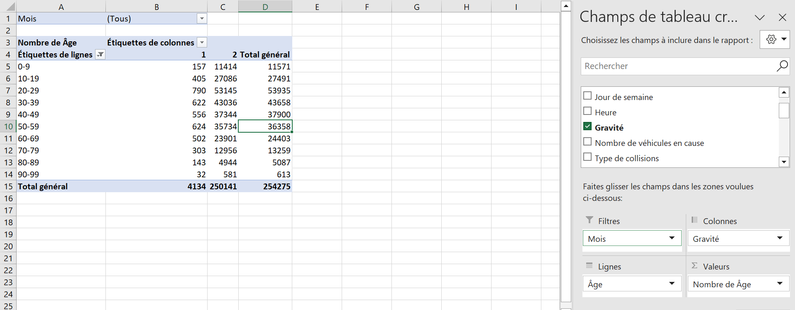
Figure7.2.6.Remplissage du tableau croisé dynamique des effectifs observés par Âge et Gravité d’accident et filtrage pour la période et l’usager voulu
On ne veut inclure que les données du mois de décembre (code 12) et les usagers qui sont des conducteurs (code 1). On appliquer des filtres pour faire cela.
Glisser et déposer la variable Mois dans la zone de saisie Filtres. Le filtre apparaît dans les cellules A1:B1 (voir la Figure 7.2.6). Cliquer sur la flèche du menu déroulant de la cellule B1. Sélectionner \(12\) pour le mois de décembre (voir la Figure 7.2.6). Cliquer sur Ok.
Glisser et déposer la variable Usager dans la zone de saisie Filtres. Le filtre apparaît dans les cellules A2:B2 (voir la Figure 7.2.6). Cliquer sur la flèche du menu déroulant de la cellule B2. Sélectionner \(1\) pour le conducteur (voir la Figure 7.2.6). Cliquer sur Ok.
À ce stade, le tableau croisé dynamique devrait ressembler à la Figure 7.2.7.
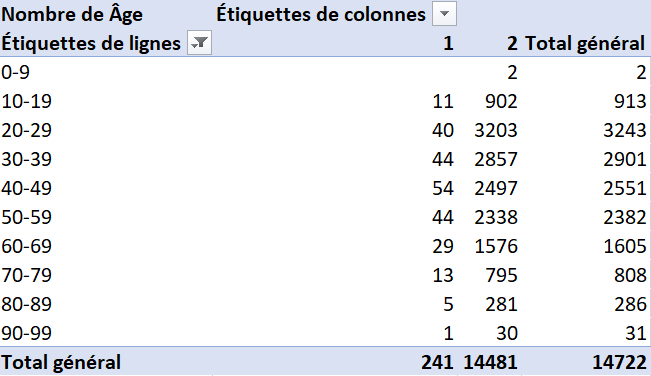
Figure7.2.7.Tableau croisé dynamique avec les variables Âge et Gravité filtrées
Remarque7.2.8.Valeurs aberrantes?
Selon le tableau de la Figure 7.2.7, deux conducteurs auraient entre \(0\) et \(10\) ans. En creusant la base de données, il est fort probable qu’il y a eu une erreur de saisie. Les données seront tout de même conservées, puisque deux unités statistiques sur \(14722\) ne feront pas une grande différence.
Remarque7.2.9.Deux classes avec peu de valeurs.
La première et la dernière classes ont peu d’individus. Il est fort probable que si on gardait les regroupements tels quels, les effectifs théoriques de ces classes seraient inférieurs à \(5\text{.}\) Ainsi, on va grouper les deux premières classes et les deux dernières classes pour s’assurer que la condition d’application du test est respectée.
Pour regrouper des classes, le processus est un peu contre-intuitif. Il faut indiquer à Excel les classes qui ne seront pas regroupées. Dans ce cas, ce sont toutes les classes entre \(20\) ans et \(79\) ans. De cette façon, Excel regroupera en une classe les données avant la classe débutant à \(20\) ans et en une autre classe les données après la classe terminant à \(79\) ans.
Cliquer avec le bouton de droite sur n’importe quelle classe d’âge de la première colonne du tableau croisé dynamique. Sélectionner l’option Grouper (voir la Figure 7.2.10).
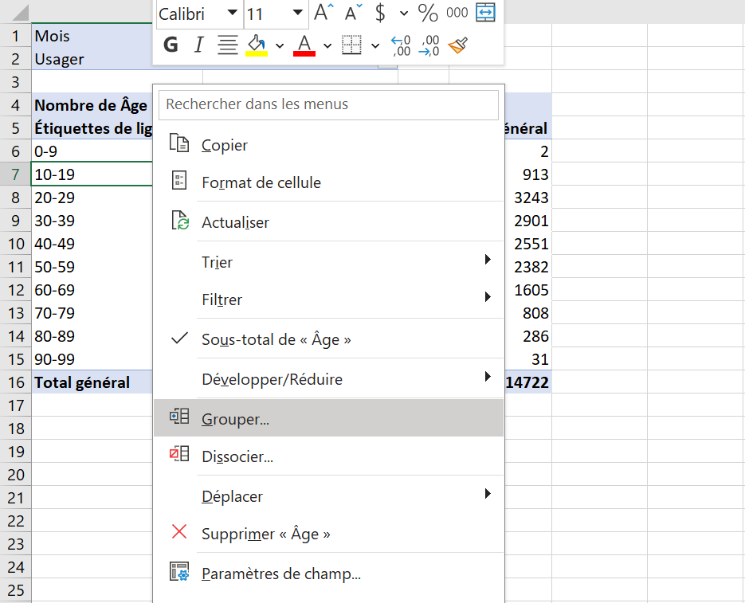
Figure7.2.10.Groupage des deux premières et des deux dernières classes
Taper \(20\) comme début et \(79\) comme fin (voir la Figure 7.2.10). Le tableau croisé dynamique des effectifs observés est présenté à la Figure 7.2.11.
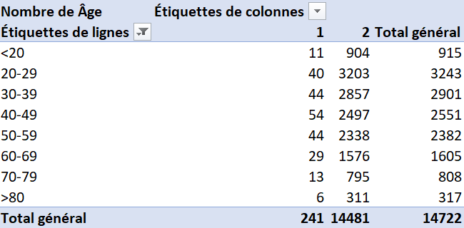
Figure7.2.11.Tableau croisé dynamique des effectifs observés
On va maintenant coller une partie de ce tableau dans la feuille Test Khi-Deux Age et faire la mise en forme du tableau des effectifs observés.
Dans la feuille Test Khi-Deux Age, cliquer sur la cellule B20 et taper le symbole = (voir la Figure 7.2.12).
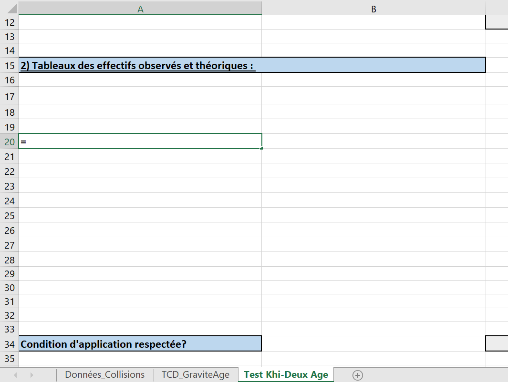
Figure7.2.12.Copiage d’une partie du tableau croisé dynamique dans le canevas Test Khi-Deux Age
Cliquer sur l’onglet de la feuille TCD_GraviteAge et sélectionner la plage A6:D14 (voir la Figure 7.2.12).
Taper la touche Enter du clavier. Le tableau suivant apparaît dans la feuille Test Khi-Deux Age (voir la Figure 7.2.13).
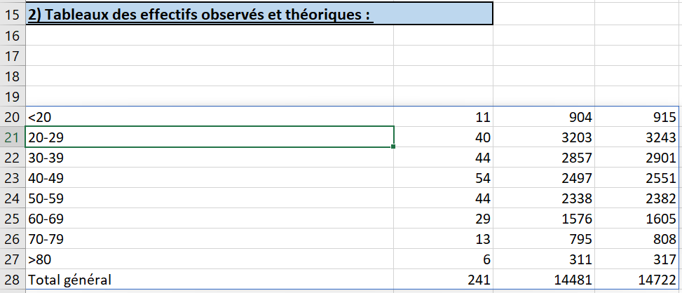
Figure7.2.13.Tableau des effectifs observés
Faire une mise en forme élémentaire du tableau. Le tableau final des effectifs théoriques doit ressembler au tableau de la Figure 7.2.14. Les couleurs et bordures importent peu ici. Si ceci était un tableau de présentation pour un rapport final, il faudrait peaufiner la mise en page ainsi que l’écriture des classes d’âge. Par exemple, au lieu de voir « < \(20\)», il faudrait voir « Moins de 20 ans ».
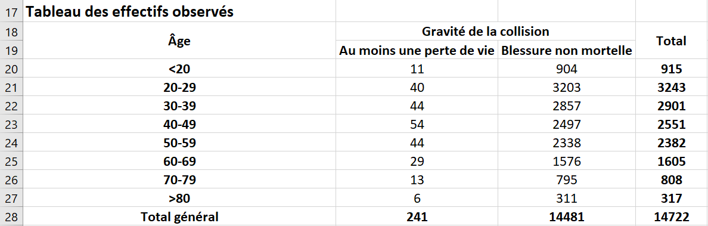
Figure7.2.14.Tableau final des effectifs observés
Il faut maintenant créer le tableau des effectifs théoriques. Dans la cellule G17, taper « Tableau des effectifs théoriques » (voir la Figure 7.2.15).
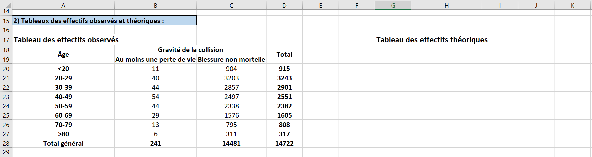
Figure7.2.15.Création du tableau des effectifs théoriques
Copier la plage de cellules A18:D28, soit le tableau des effectifs observés. Faire un collage spécial en ne collant que les valeurs dans la cellule G18 (voir la Figure 7.2.15).
Sélectionner la plage de cellules H20:I27 et la supprimer en appuyant sur la touche Supp du clavier (voir la Figure 7.2.15).
Formatter les titres au besoin. Ce n’est pas nécessaire.
La formule pour calculer un effectif théorique est le total de la colonne multiplié par le total de la ligne divisé par la taille de l’échantillon. Dans la cellule H20, taper =H$28*$J20/$J$28 (voir la Figure 7.2.16).
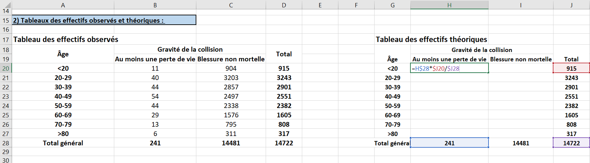
Figure7.2.16.Calcul des effectifs théoriques
Le symbole $ devant le nombre \(28\) permet de fixer la ligne à \(28\) lorsque la formule sera recopiée dans les cellules avoisinantes. Ainsi, le total de la ligne sera toujours celui de la ligne \(28\text{.}\) Le symbole $ devant la lettre J fige la valeur du total de la colonne.
Sélectionner la cellule H20. Placer le curseur dans le coin inférieur droit jusqu’à ce que la croix noire de recopie (+) apparaisse. Double-cliquer sur le coin inférieur droit. La formule se recopie jusqu’à la cellule H27 (voir la Figure 7.2.16). Il est également possible de garder enfoncer le curseur et de glisser la formule vers le bas.
La plage de cellules H20:H27 devrait toujours être sélectionnée. Placer le curseur dans le coin inférieur droit de la cellule H27 jusqu’à ce que la croix noire de recopie (+) apparaisse. Cliquer avec le bouton de gauche de la souris en gardant le bouton enfoncé et glisser le curseur vers la droite pour remplir les cellules I20:I27 (voir la Figure 7.2.16). Il est possible de voir que les effectifs observés et théoriques sont assez similaires.
Finalement, il ne reste qu’à vérifier si la condition d’application d’un test d’indépendance du khi-deux est respectée pour procéder à la prochaine étape. Tous les effectifs théoriques des cellules H20:I27 sont supérieurs à \(5\text{.}\) Ainsi, dans la case C34, taper taper « Oui, Tij > 5 » (voir la Figure 7.2.17).
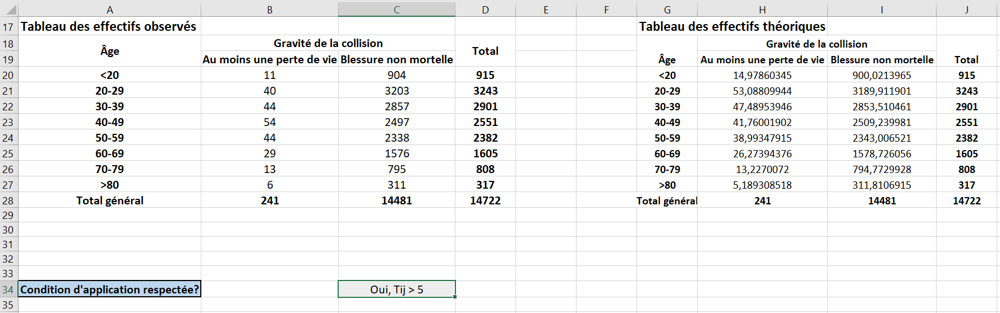
Figure7.2.17.Condition d’application vérifiée
À la troisième étape, on procède de deux façons pour en arriver à trouver une règle de décision. On utilise la valeur p et le khi-deux observé \(\chi^{2}_{obs}\text{.}\) Il faut remplir les cases grisées, soit la valeur p (l’aire à droite du khi-deux observé), le degré de liberté et le seuil de signification \(\alpha\text{.}\) Les cases roses se rempliront automatiquement, car les formules pour le calcul des khi-deux respectifs sont inscrites. La fonction Excel LOI.KHIDEUX.INVERSE.DROITE est utilisée. Elle nécessite deux paramètres, soit l’aire à droite d’une valeur de khi-deux et le degré de liberté.
La fonction Excel CHISQ.TEST permet de calculer la valeur p. Il faut inscrire la plage des effectifs observés ainsi que la plage des effectifs théoriques.
Dans la cellule B40, taper =CHISQ.TEST(B20:C27;H20:I27) (voir la Figure 7.2.18). Il est possible de sélectionner les plages de cellules au lieu de taper la formule.
La valeur p s’approche de \(0,2294\text{,}\) une probabilité assez élevée.
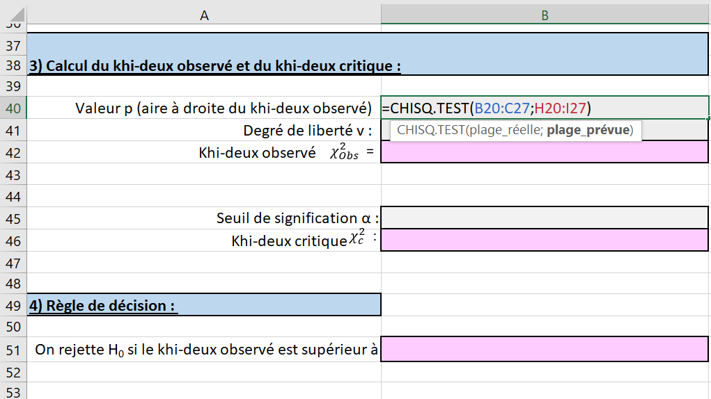
Figure7.2.18.Remplissage des cases pour les étapes 3 et 4
Dans la cellule B41, taper =(8-1)*(2-1), soit le calcul du degré de liberté d’un test d’indépendance. On le calcule en multipliant le nombre de modalités de la première variable moins \(1\) et le nombre de modalités de la deuxième variable moins \(1\) (voir la Figure 7.2.18).
La cellule B42 se remplit automatiquement. La valeur du \(\chi^{2}_{obs}\) est d’environ \(9,34\text{.}\)
Dans la cellule B45, taper =0,05 pour un seuil de \(5\%\) (voir la Figure 7.2.18).
La cellule B46 se remplit automatiquement. La valeur du \(\chi^{2}_{c}\) est d’environ \(14,07\text{.}\)
Dans la cellule A56, écrire un texte qui permet de conclure s’il existe un lien entre les variables Gravité et Âge (voir la Figure 7.2.19).
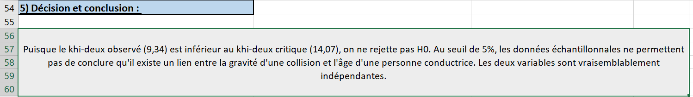
Figure7.2.19.Décision et conclusion du test d’indépendance entre la gravité et l’âge
Sous-section7.2.3Lien entre la gravité d’un accident et le type de mesures de sécurité utilisées
Les étapes pour réaliser un test d’indépendance du khi-deux entre deux variables qualitatives sont présentées dans cette sous-section. On souhaite vérifier s’il existe un lien entre la gravité d’un accident et le type de mesures de sécurité utilisées. Il est attendu que la gravité d’un accident dépende des mesures de sécurité utilisés. Selon la Sûreté du Québec, le port de la ceinture et plusieurs autres dispositifs de sécurité comme les sièges pour bébé diminuent la gravité des blessures ( 1
). On va tester cette hypothèse au seuil de signification de \(5\%\text{.}\)
Sous-sous-section7.2.3.1Étapes d’un test d’indépendance avec deux variables qualitatives
Les étapes d’un test d’indépendance avec deux variables qualitatives sont présentées ci-dessous.
Ouvrir les fichiers Excel Données_Collisions.xlsx et Labo 7_Canevas.xlsx.
Effectuer la procédure présentée à la ... (voir labo 4 JS) pour copier la feuille Test d’indépendance du fichier Labo 7_Canevas au classeur Données_Collisions. Une fois fait, fermer le fichier Labo 7_Canevas.xlsx.
Dans le classeur Données_Collisions, sélectionner la feuille Test d’indépendance. Renommer la feuille « Test Khi-Deux Sécurité» et la placer en dernière position.
La première étape d’un test d’indépendance consiste à définir ses variables et écrire les hypothèses nulle et alternative. Dans la cellule C4, taper « La gravité d’une collision ». Dans La cellule C5, taper « Les mesures de sécurité » (voir la Figure 7.2.20).
Pour ce test d’indépendance, l’hypothèse nulle \(H_{0}\) est que les deux variables sont indépendantes. L’hypothèse alternative \(H_{1}\) est son contraire, soit que les deux variables sont dépendantes.
Dans l’encadré gris de la cellule D8, vis-à-vis \(H_{0}\text{,}\) taper « La gravité d’une collision et les mesures de sécurité utilisées sont indépendantes » (voir la Figure 7.2.20). Dans l’encadré gris de la cellule D11, vis-à-vis \(H_{1}\text{,}\) taper « La gravité d’une collision et les mesures de sécurité utilisées sont dépendantes » (voir la Figure 7.2.20)
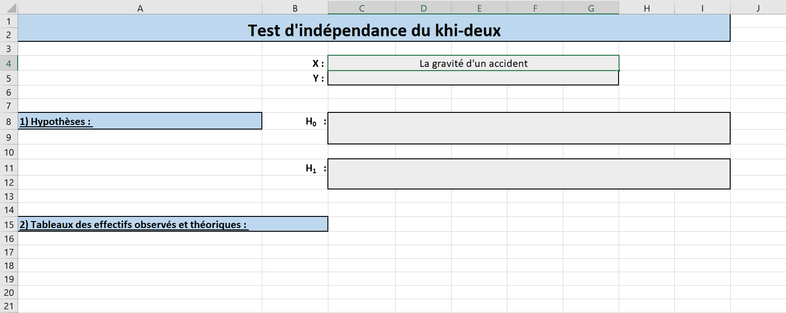
Figure7.2.20.Remplissage de la première étape d’un test d’indépendance entre la gravité d’une collision et les mesures de sécurité utilisées
La deuxième étape consiste à construire le tableau des effectifs observés et le tableau des effectifs théoriques.
Il faut commencer par générer un tableau croisé dynamique des effectifs observés. Dans la feuille Données_Collisions, sélectionner le tableau « Échantillon ».
En suivant les étapes présentées à la Sous-sous-section 1.2.8.1, générer, dans une nouvelle feuille de calcul qu’on renomme TCD_GraviteSécurité, un tableau croisé dynamique vide à partir du tableau Échantillon. Placer ce tableau dans la cellule A3 (voir la Figure 7.2.21).
Glisser et déposer la variable Mesures de sécurité dans la zone de saisie Lignes (voir la Figure 7.2.21).
Glisser et déposer la variable Gravité dans la zone de saisie Colonnes (voir la Figure 7.2.21).
Glisser et déposer la variable Mesures de sécurité dans la zone de saisie Valeurs (voir la Figure 7.2.21). S’assurer que le calcul fait est bien le compte (Nombre) et non la somme. Si c’est la somme, changer pour Nombre avec les étapes vues à la Sous-sous-section 1.2.8.2.
Figure7.2.21.Tableau croisé dynamique avec la variable Mesures de sécurité en lignes et la variable Mesures de sécurité en colonnes
On ne veut inclure que les données du mois de décembre (code 12). On appliquer des filtres pour faire cela.
Glisser et déposer la variable Mois dans la zone de saisie Filtres. Le filtre apparaît dans les cellules A1:B1 (voir la Figure 7.2.21). Cliquer sur la flèche du menu déroulant de la cellule B1. Sélectionner \(12\) pour le mois de décembre (voir la Figure 7.2.21). Cliquer sur Ok.
À ce stade, le tableau croisé dynamique devrait ressembler à la Figure 7.2.22.
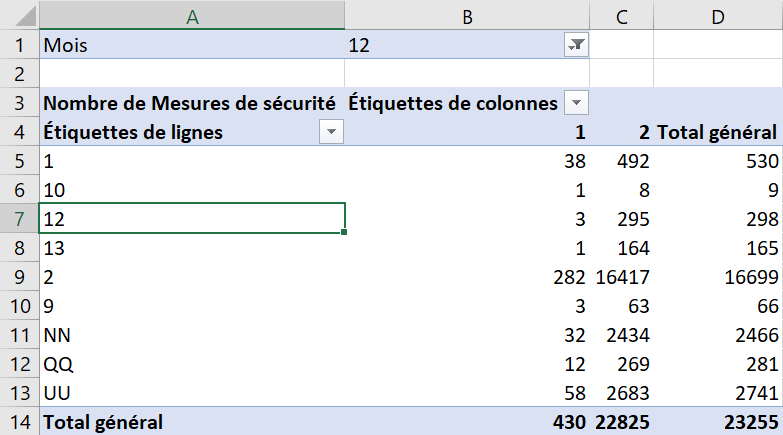
Figure7.2.22.Tableau croisé dynamique avec les variables Mesures de sécurité et Gravité filtrées
Ce tableau croisé dynamique présente deux difficultés pour la poursuite d’un test d’indépendance du khi-deux. Premièrement, on ne veut pas inclure les modalités NN, QQ et UU, car elles n’offrent aucune information. On rappelle que ce sont les codes pour « l’élément d’information est sans objet », « autre situation que les précédentes » et « Inconnu ». Deuxièmement, les modalités \(9\text{,}\)\(10\) et \(13\) ont peu d’effectifs observés. En soi, ce n’est pas un problème. Cependant, le calcul d’effectifs théoriques impliquant ces modalités vont engendrer des valeurs inférieures à \(5\text{.}\) Ainsi, pour éviter d’avoir des effectifs théoriques inférieurs à \(5\text{,}\) on doit regrouper des modalités à échelle nominale.
Remarque7.2.23.Regrouper les valeurs d’une variable à échelle nominale.
Pour regrouper les valeurs d’une variable à échelle nominale, il est suggéré d’y aller avec la logique. Dans le cas des dispositifs de sécurité, les modalités \(1\text{,}\)\(12\) et \(13\) sont des catégories dans lesquelles aucun dispositif de sécurité n’a été utilisé. Il y a donc un lien logique à regrouper ces catégories. Les modalités \(2\text{,}\)\(9\) et \(10\) sont des catégories dans lesquelles une mesure de sécurité a été utilisée (ceinture, port de casque et port de vêtements réfléchissants respectivement). Il est donc logique de regrouper ces trois modalités.
On veut maintenant grouper certaines modalités de la variable Mesures de sécurité. Puisque les valeurs des modalités sont des codes numériques non consécutifs, il sera plus facile de les grouper s’ils sont placés l’un à la suite de l’autre dans l’ordre de groupement. Excel permet de déplacer des modalités.
Dans la colonne des étiquettes de lignes de la variable Mesures de sécurité, cliquer avec le bouton de gauche de la souris sur la valeur \(12\) telle que cette dernière est encadrée d’une bordure verte. Ensuite, cliquer avec le bouton de droite de la souris sur la valeur \(12\text{.}\) Cliquer l’option Déplacer (voir la Figure 7.2.24), suivi de l’option Déplacer “12” vers le haut.
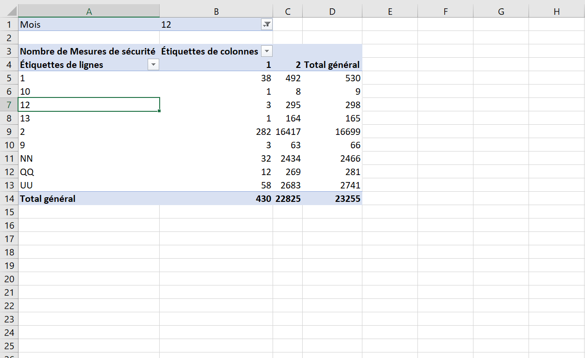
Figure7.2.24.Déplacer variable Mesures de sécurité
On va faire de même pour les modalités \(10\) et \(13\text{.}\) Dans la colonne des étiquettes de lignes de la variable Mesures de sécurité, cliquer avec le bouton de droite de la souris sur la valeur \(10\text{.}\) Cliquer l’option Déplacer (voir la Figure 7.2.24), suivi de l’option Déplacer “10” vers le bas. Au final, les modalités \(1\text{,}\)\(12\) et \(13\) sont l’une à la suite de l’autre ainsi que les modalités \(2\text{,}\)\(9\) et \(10\) (voir la Figure 7.2.25).
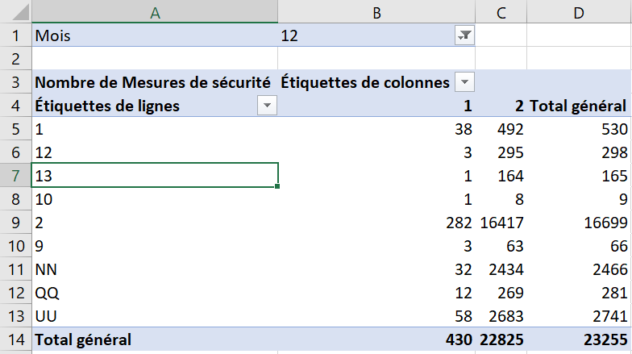
Figure7.2.25.Séquence de modalités dans l’ordre voulu
On va grouper les modalités \(1\text{,}\)\(12\) et \(13\) ainsi que les modalités \(2\text{,}\)\(9\) et \(10\text{.}\)
Dans la colonne des étiquettes de lignes de la variable Mesures de sécurité, lorsque la flèche noire pointant vers la droite apparaît, sélectionner les trois lignes des modalités \(1\text{,}\)\(12\) et \(13\) (voir la Figure 7.2.26).
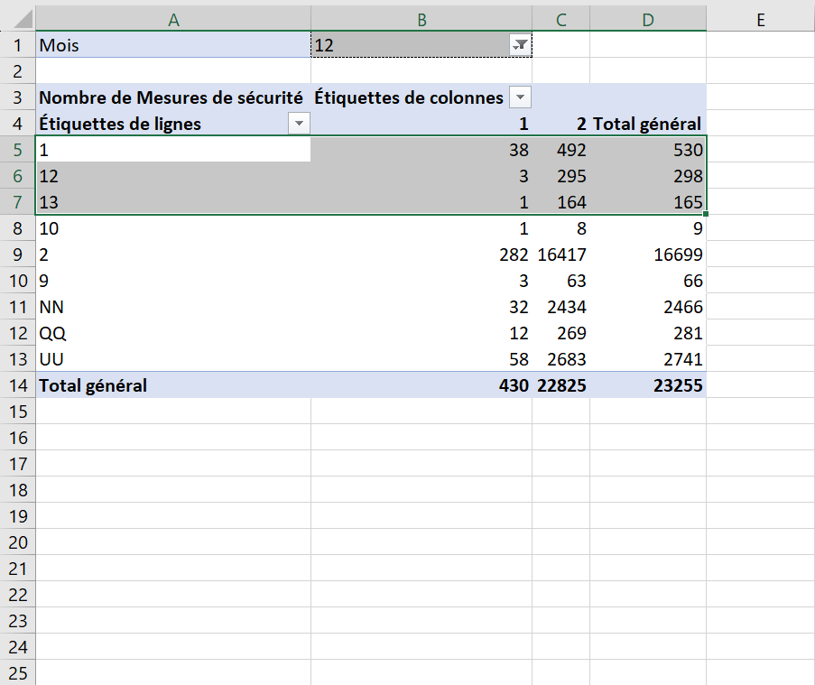
Figure7.2.26.Groupement de modalités
Une fois les lignes grisées, cliquer avec le bouton de droite de la souris et sélectionner l’option Grouper (voir la Figure 7.2.26). Excel groupe les trois modalités dans un groupe intitulé Groupe 1 (voir la Figure 7.2.27).
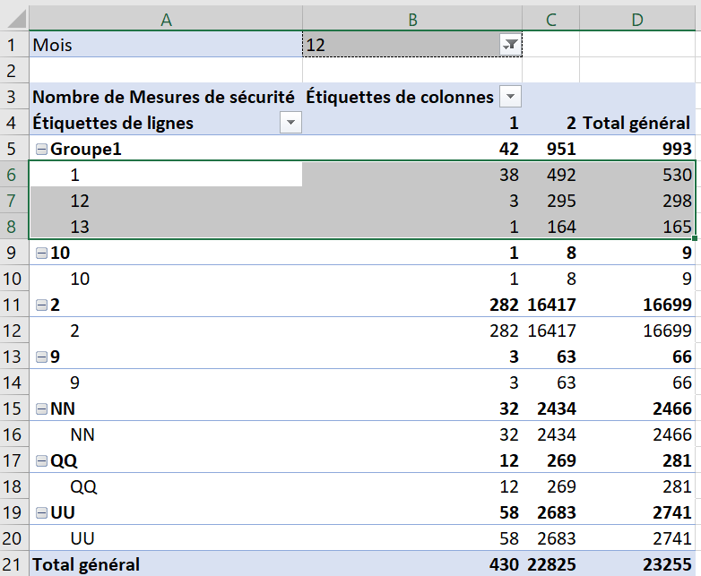
Figure7.2.27.Groupement des modalités et création de Groupe 1
À gauche du nom Groupe 1, il y a un icône -. Cliquer cette icône pour réduire les modalités de ce groupe, c’est-à-dire pour rendre la lecture moins encombrante (voir la Figure 7.2.26).
Répéter l’étape précédente pour les modalités \(10\text{,}\)\(2\text{,}\)\(9\text{,}\)\(NN\text{,}\)\(QQ\) ainsi que \(UU\) (voir la Figure 7.2.26).
Dans la colonne des étiquettes de lignes de la variable Mesures de sécurité, lorsque la flèche noire pointant vers la droite apparaît, sélectionner les trois lignes des modalités \(10\text{,}\)\(2\) et \(9\) (voir la Figure 7.2.26).
Cliquer avec le bouton de droite de la souris et sélectionner l’option Grouper (voir la Figure 7.2.26). Le Groupe 2 est créé. Cliquer sur l’icône - à gauche de Groupe 2 pour réduire les modalités de ce groupe.
Le résultat des groupements est présenté à la Figure 7.2.28.
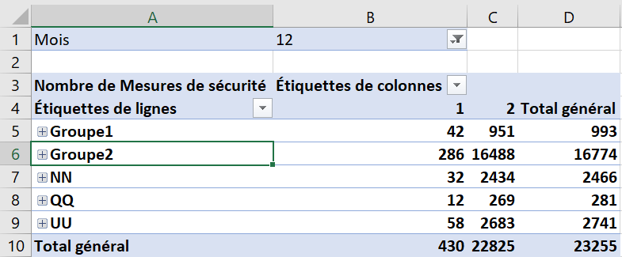
Figure7.2.28.Groupement final des modalités
Pour filtrer les modalités \(NN\text{,}\)\(QQ\) et \(UU\text{,}\) cliquer sur le petit triangle du menu déroulant de l’étiquette de lignes (voir la Figure 7.2.29).
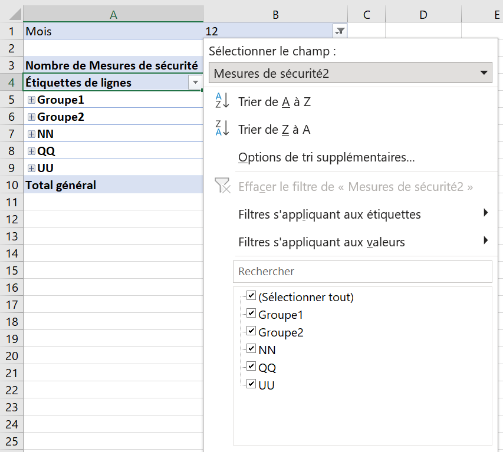
Figure7.2.29.Filtrage des modalités \(NN\text{,}\)\(QQ\) et \(UU\)
Décliquer les modalités \(NN\text{,}\)\(QQ\) et \(UU\text{.}\) Cliquer sur OK (voir la Figure 7.2.29).
À ce stade, le tableau croisé dynamique devrait ressembler à la Figure 7.2.30
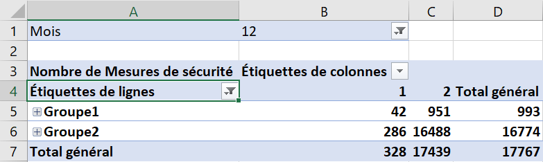
Figure7.2.30.Tableau croisé dynamique avec les variables Mesures de sécurité et Gravité
Dans la feuille Test Khi-Deux Sécurité, cliquer sur la cellule B20 et taper le symbole = (voir la Figure 7.2.31).
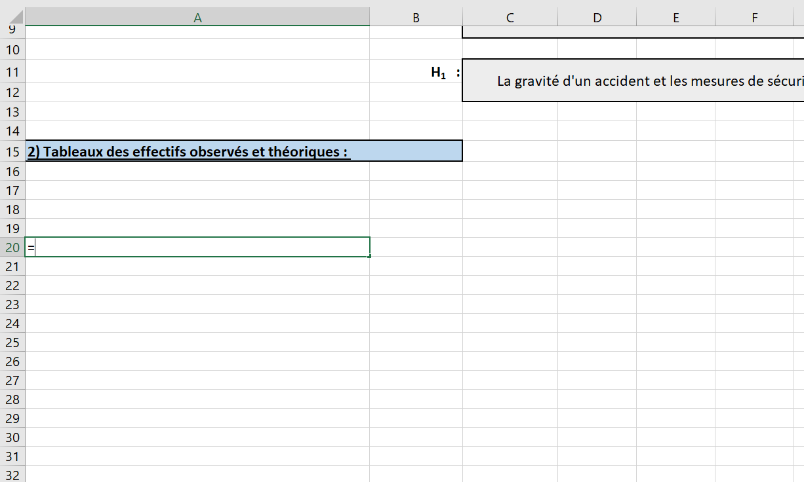
Figure7.2.31.Copiage d’une partie du tableau croisé dynamique dans le canevas Test Khi-Deux Sécurité
Cliquer sur l’onglet de la feuille TCD_GraviteSécurité et sélectionner la plage A5:D7 (voir la Figure 7.2.31).
Taper la touche Enter du clavier. Le tableau suivant apparaît dans la feuille Test Khi-Deux Sécurité (voir la Figure 7.2.32).
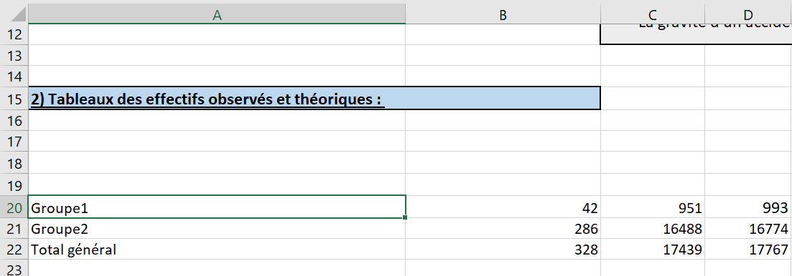
Figure7.2.32.Tableau des effectifs observés
Faire une mise en forme élémentaire du tableau. Le tableau final des effectifs théoriques doit ressembler au tableau de la Figure 7.2.33. Les couleurs et bordures importent peu ici. Si ceci était un tableau de présentation pour un rapport final, il faudrait peaufiner la mise en page.
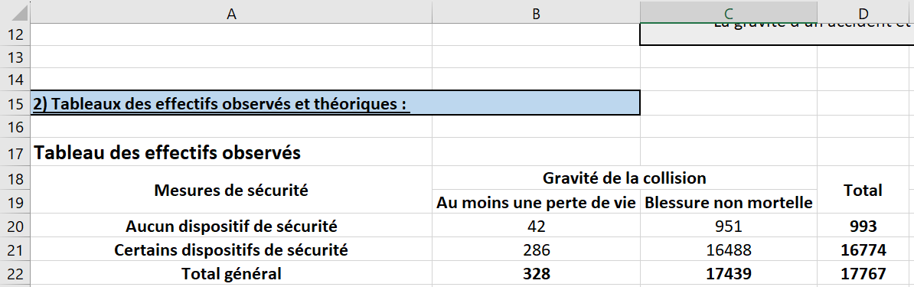
Figure7.2.33.Tableau final des effectifs observés
Il faut maintenant créer le tableau des effectifs théoriques. Dans la cellule G17, taper « Tableau des effectifs théoriques » (voir la Figure 7.2.34).
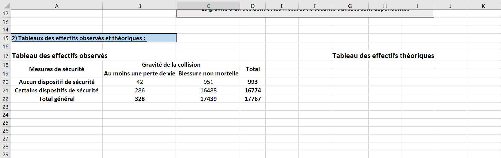
Figure7.2.34.Création du tableau des effectifs théoriques
Copier la plage de cellules A18:D22, soit le tableau des effectifs observés. Faire un collage spécial en ne collant que les valeurs dans la cellule G18 (voir la Figure 7.2.34).
Sélectionner la plage de cellules H20:I21 et la supprimer en appuyant sur la touche Supp du clavier (voir la Figure 7.2.34).
Formatter les titres au besoin. Ce n’est pas vraiment nécessaire.
La formule pour calculer un effectif théorique est le total de la colonne multiplié par le total de la ligne divisé par la taille de l’échantillon. Dans la cellule H20, taper =H$22*J$20/$J$22 (voir la Figure 7.2.34).
Sélectionner la cellule H20. Placer le curseur dans le coin inférieur droit jusqu’à ce que la croix noire de recopie (+) apparaisse. Cliquer avec le bouton de gauche de la souris en gardant le bouton enfoncé et glisser le curseur vers le bas jusqu’à la cellule H21. Relâcher le bouton de gauche de la souris. Avec la plage H20:H21 sélectionné, placer encore une fois le curseur dans le coin inférieur droit et glisser vers la droite pour remplir les cellules I20:I21 (voir la Figure 7.2.34).
Finalement, il ne reste qu’à vérifier si la condition d’application d’un test d’indépendance du khi-deux est respectée pour procéder à la prochaine étape. Tous les effectifs théoriques des cellules H20:I21 sont supérieurs à \(5\text{.}\) Ainsi, dans la case C34, taper taper « Oui, Tij > 5 ».
À la troisième étape, on procède de deux façons pour en arriver à trouver une règle de décision. On utilise la valeur p et le khi-deux observé \(\chi^{2}_{obs}\text{.}\) Il faut remplir les cases grisées, soit la valeur p (l’aire à droite du khi-deux observé), le degré de liberté et le seuil de signification \(\alpha\text{.}\) Les cases roses se rempliront automatiquement, car les formules pour le calcul des khi-deux respectifs sont inscrites. La fonction Excel LOI.KHIDEUX.INVERSE.DROITE est utilisée. Elle nécessite deux paramètres, soit l’aire à droite d’une valeur de khi-deux et le degré de liberté.
La fonction Excel CHISQ.TEST permet de calculer la valeur p. Il faut inscrire la plage des effectifs observés ainsi que la plage des effectifs théoriques.
Dans la cellule B40, taper =CHISQ.TEST(B20:C21;H20:I21) (voir la Figure 7.2.35). Il est possible de sélectionner les plages de cellules au lieu de taper la formule.
La valeur p s’approche de \(9,33 \times 10^{-9}\text{,}\) une probabilité très petite.
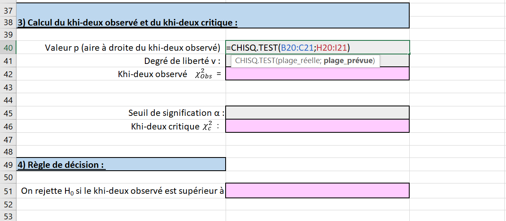
Figure7.2.35.Remplissage des cases pour les étapes 3 et 4
Dans la cellule B41, taper =(2-1)*(2-1), soit le calcul du degré de liberté d’un test d’indépendance. On le calcule en multipliant le nombre de modalités de la première variable moins \(1\) et le nombre de modalités de la deuxième variable moins \(1\) (voir la Figure 7.2.35).
La cellule B42 se remplit automatiquement. La valeur du \(\chi^{2}_{obs}\) est d’environ \(32,98\text{.}\)
Dans la cellule B45, taper =0,05 pour un seuil de \(5\%\) (voir la Figure 7.2.35).
La cellule B46 se remplit automatiquement. La valeur du \(\chi^{2}_{c}\) est d’environ \(3,84\text{.}\)
Dans la cellule A56, écrire un texte qui permet de conclure s’il existe un lien entre les variables Gravité et Mesures de sécurité (voir la Figure 7.2.36).
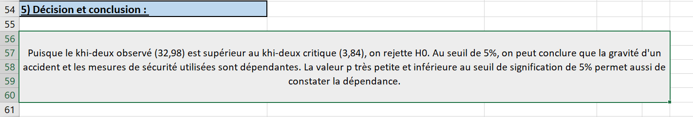
Figure7.2.36.Décision et conclusion du test d’indépendance entre la gravité et le type de mesures de sécurité